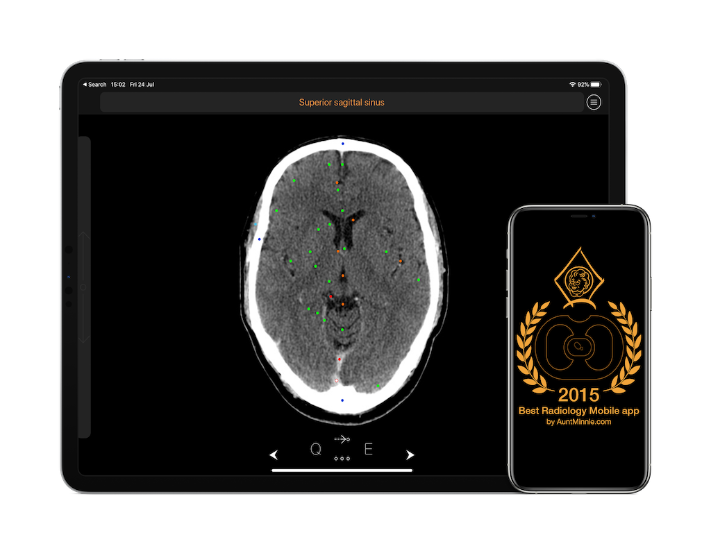
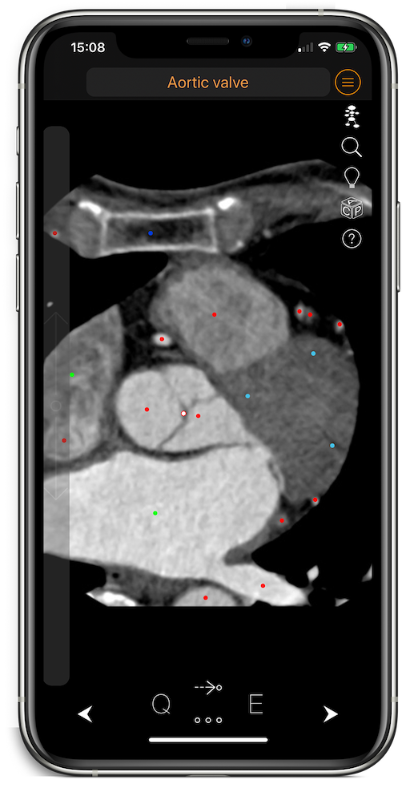
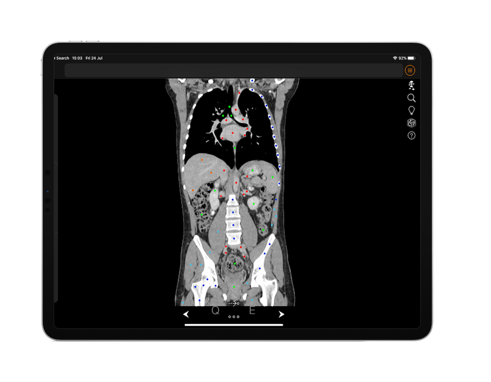

Recognized by radiology.
After winning “Best Radiology Mobile app” 2015, CT Anatomy was nominated again, for “Best Radiology Mobile App” 2016 and 2018 by AuntMinnie.com!
120+Countries
9,000+Users
CT Anatomy™ is a cross-sectional anatomy atlas for iOS devices.
Anatomy of the BRAIN, SKULL BASE, NECK, THORAX (mediastinum AND lungs), HEART (Cardiac CT/coronary arteries), ABDOMEN, PELVIS (male AND female), LOWER and UPPER EXTREMITIES (Femur, Knee, Ankle, Shoulder, Elbow and Wrist).

After winning “Best Radiology Mobile app” 2015, CT Anatomy was nominated again, for “Best Radiology Mobile App” 2016 and 2018 by AuntMinnie.com!

Great reference tool for students, doctors and medical professionals. Learn CT Anatomy on your iPhone or your iPad.

“CT Anatomy is a useful radiology app that helps educate the user on normal human anatomy seen on the CT. It is great for learning general anatomy or showing patients a normal CT scan for comparison. The app has a full body CT scan and uses color coded pins to label the anatomic structures.”